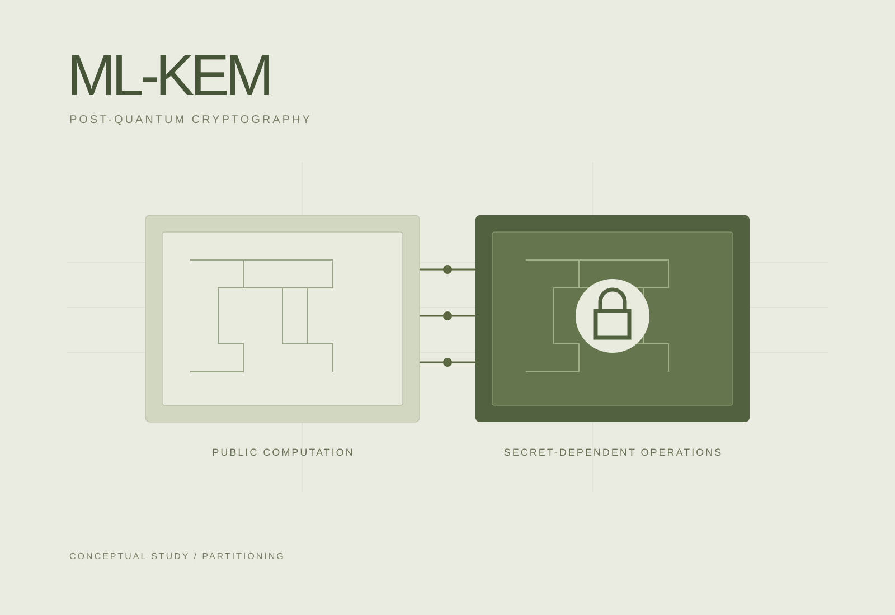

Split ML-KEM in TrustZone
Secret-dependent ML-KEM partitioning on Arm TrustZone-A.

Problem
Placing a full post-quantum cryptographic implementation inside an embedded TEE can enlarge the trusted code base and increase execution cost.
Approach
Partition ML-KEM by secret dependency: isolate secret-dependent operations in OP-TEE’s Secure World and offload public computation to the Normal World.
Contribution
Implemented split ML-KEM in OP-TEE on Arm TrustZone-A and evaluated the partitioned architecture. Co-first author of the KCC 2026 paper.
Results
The reported evaluation reduced trusted code size by 90.8% and mean latency by 25.5% relative to the study’s baseline architecture. The research received the KCC 2026 Outstanding Paper Award.
Scope & limitations
These are baseline-relative results from the study’s evaluated platform and configuration, not general guarantees for every device or implementation. Public repositories include related research prototypes and scaffolding.